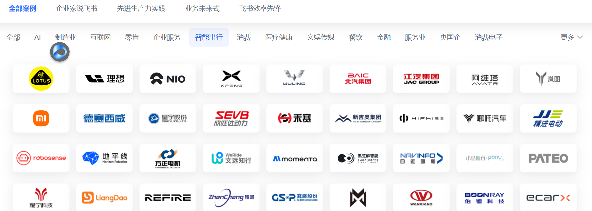
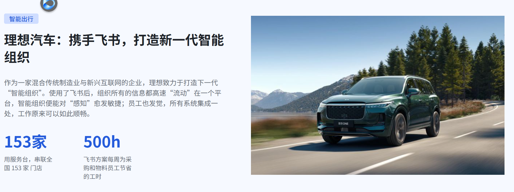
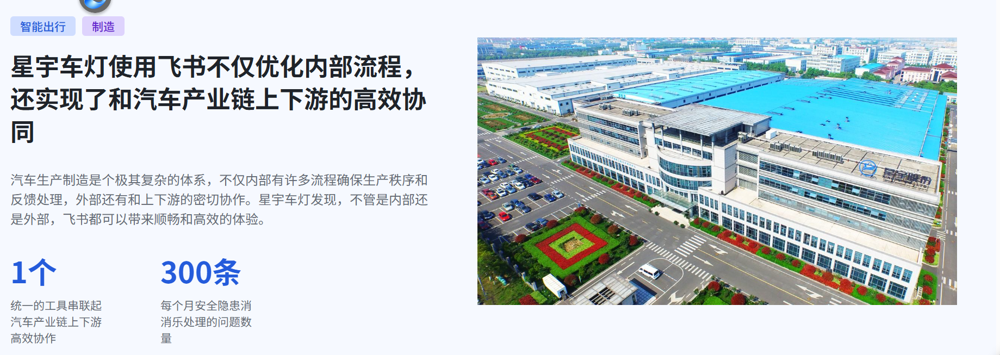

数字化转型方案
飞书×豆包AI 助力光裕汽车空调数字化转型
飞书与豆包AI 能为广州市光裕汽车空调制造有限公司创造什么价值、如何分步落地
来源：飞书文档导出 ｜ 2026-10 整理为 HTML
核心观点
- 核心判断：光裕正处于双工厂扩产、新能源转型、内外销扩张的关键期，飞书以「All-in-one 协同 + AI 赋能」支撑经营数据可视、跨厂协同高效、业务管理精细，是适配当前发展阶段、可快速见效的数字化底座。
- 关键发现一：光裕现有痛点集中在经营数据不可视、跨厂协同低效、销售管理粗放、供应链缺料预警缺失、经验知识无沉淀五方面[1][2]。
- 关键发现二：飞书+豆包AI 可覆盖经营管理、跨厂生产、销售客户、供应链、质量车间、组织知识、AI 赋能七大价值场景，一套平台统一承接[3][4][5]。
- 关键发现三：同类制造企业已有量化成效：鑫丰泰运营效率提升 40%、RPS 报价人力节省超 50%、昆山沪光一张表串起九大部门，制造业场景验证充分[6][7][8]。
边界说明：案例成效来自同类企业公开实践，光裕的具体收益需结合实际落地范围与实施情况验证。
我们对光裕的理解
在方案沟通前，基于公开资料与行业实践对光裕做了系统了解。光裕是深耕汽车空调压缩机行业近 20 年的国家高新技术企业、省级专精特新企业，正在从"传统压缩机配套商"向"新能源热管理部件供应商"升级[1]。
公司概况
| 维度 | 情况 | 维度 | 情况 |
|---|
| 成立时间 | 2006 年，注册资本 2,600 万元（实缴） | 生产布局 | 广州增城 + 惠州龙门双工厂 |
| 主营产品 | 汽车空调压缩机（508/507 系列、电动涡旋压缩机）及配件、冷却系统 | 年产能 | 100 万台压缩机（官网口径） |
| 目标市场 | 国内外主机厂前装配套 + 售后市场双轨 | 资质 | 高新技术企业、省级专精特新、IATF16949、ISO9001，27 项专利 |
正处于三个关键窗口期
- 产能扩张窗口：惠州二号工厂 5 万㎡已投产，广州新增 A1 厂房在建，双工厂并行对跨厂协同提出更高要求。
- 产品升级窗口：电动涡旋压缩机主攻新能源车热管理方向，新项目增多，对项目管理与报价响应速度要求更高。
- 市场拓展窗口：内外贸同步发力，招聘俄语、阿拉伯语外贸岗拓展中东、东欧市场，跨语言、跨时区协作需求上升。
汽车零部件制造业的共性挑战
光裕面临的管理挑战并非孤例。走访调研发现，同等规模的汽车零部件与制造企业，普遍存在数据、协同、管理三方面的共性瓶颈[2][9]。以上痛点直接影响三件事：管理层决策质量、一线执行效率、对主机厂的保供能力。对光裕而言，双工厂并行与新能源新项目叠加，管理半径扩大，正是补齐数字化能力、把管理做细的最佳时机。
飞书×豆包AI：一套平台承接协同与智能
飞书是字节跳动自研的「All-in-one」企业协作与管理平台，把办公协同、业务协同、组织协同放在一个软件里；豆包AI 与飞书深度打通，让 AI 基于企业内部知识工作。当光裕的文档、表格、流程、数据都沉淀在飞书上，就天然形成了数据飞轮与知识飞轮，为 AI 应用提供底层养料[2][10]。
整体方案架构
| 层次 | 承载能力 | 对光裕的价值 |
|---|
| 协同底座 | 即时消息、云文档、日历、视频会议、任务、审批 | 全员统一工作入口，跨厂沟通协作一步到位 |
| 业务平台 | 多维表格、自动化流程、仪表盘、集成平台（Anycross） | 零代码搭建业务应用，打通 ERP/WMS 等系统数据 |
| 组织管理 | 知识库、服务台、绩效、人事 | 经验沉淀组织化，管理制度落地有抓手 |
| AI 赋能 | 豆包企业版、智能纪要、知识问答、智能伙伴 | 让 AI 懂光裕的业务，全员办公与决策提效 |
七大价值场景：从经营到 AI 的全链路提效
结合光裕的业务特点与行业最佳实践，梳理出七大可落地的价值场景，覆盖经营管理全链路[3][4][5]：
场景一：经营管理驾驶舱，让管理层实时看数
痛点：生产计划达成率、良品率、交期、产值等关键经营指标分散在 Excel 与各系统中，管理层往往月底才能看到数据，异常靠事后追溯。
- 多维表格+仪表盘：搭建生产、质量、交付一体化看板，关键指标实时更新、自动汇总。
- 自动化+消息推送：异常数据（如停机、报废、延期）自动触发告警推送到管理层，从"等数据"变为"数据找人"。
场景二：跨厂协同与生产管理，双工厂一张网
痛点：增城、惠州两地工厂进度同步靠微信、邮件与电话，信息滞后、责任难追踪。
- 飞书群+任务+日历：生产计划、排产、报工、设备点检统一在线，任务责任到人、节点自动提醒。
- 审批线上化：采购、领料、报修等流程线上流转，跨厂审批不再等纸质单。
场景三：销售与客户管理，一张表管客户
痛点：客户资料、跟进记录、报价信息分散在销售个人表格中，管理层看不到统一视图，客户来源与转化难以分析。
- 多维表格 CRM：客户档案、跟进记录、商机阶段一张表管理，支持按区域、渠道、等级多维分析，自动生成仪表盘。
- 多语种翻译：会话、会议、文档实时互译，支撑中东、东欧等海外市场拓展；报价审批线上化，缩短响应周期。
场景四：供应链与物料管理，缺料自动预警
痛点：物料需求与库存数据分散，缺料风险依赖人工跟催，一旦停产直接影响主机厂保供。
- 物料数据打通：将采购、库存数据汇总到多维表格，缺料风险自动计算、实时预警推送对应责任人。
- 供应商协同：供应商可通过外部协作空间查询订单、反馈交期，沟通留痕可追溯。
场景五：质量与车间管理，巡检点检数字化
痛点：车间点检、质量巡检以纸质记录为主，数据无法沉淀分析，问题整改难闭环。
- 表单+多维表格：扫码填报点检、巡检结果，自动带出时间与人员信息，不可替检代检。
- 整改闭环：异常自动推送责任人，整改结果在线反馈，质量数据按月统计分析。
场景六：组织协同与知识管理，经验不流失
痛点：工艺、质量、设备维修经验存于个人头脑与纸质记录，人员流动即流失。
- 知识库：制度、工艺标准、FAQ 统一沉淀，支持全文检索，新人上手更快。
- 服务台：IT、行政、人事等服务台机器人 24 小时应答常见问题，释放人力。
场景七：豆包AI 智能赋能，全员提效
- 智能纪要：会议自动生成纪要与待办，跨部门评审会不再靠人工记录。
- 知识问答：豆包企业版基于企业知识库有问必答，工艺、制度问题秒级响应。
- 内容生成：文档总结、PPT/表格生成、图片生成，覆盖高频办公场景。
同类企业实践与量化效果
以下案例与光裕同属制造/汽车产业链，场景相近、成效可参照，均已公开验证[6][7][8]：

飞书在智能出行/汽车产业链的部分客户

理想汽车：携手飞书打造新一代智能组织

星宇车灯：优化内部流程，实现汽车产业链上下游高效协同
这些案例共同说明：飞书在制造企业的价值不依赖重开发，而是通过多维表格、自动化、集成平台等轻量化能力，把业务流程搬上线、把数据聚起来，快速产生可量化的管理红利。
落地路径与下一步
建议按"先协同、再业务、后 AI"的三步走节奏推进，每阶段都有明确的业务目标与交付物，避免"上系统容易、用起来难"：
1
快速见效（第 1 个月）
从协同底座与审批线上化切入，1 个月内让全员用起来，先解决跨厂沟通与流程效率问题。
2
重点突破
围绕经营看板、销售客户管理、供应链预警三个高价值场景重点落地，用多维表格+自动化快速兑现业务价值。
3
面向未来
同步规划知识库与豆包AI 应用，让数据与知识沉淀成为光裕的长期数字资产，支撑新能源业务扩张与海外市场拓展。
结论与建议
下一步：建议安排一次线下交流，基于光裕的组织架构与业务流程，输出针对性的落地方案与实施计划。